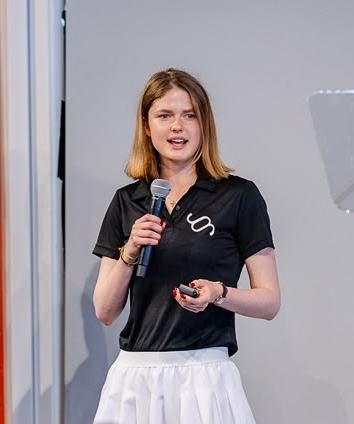
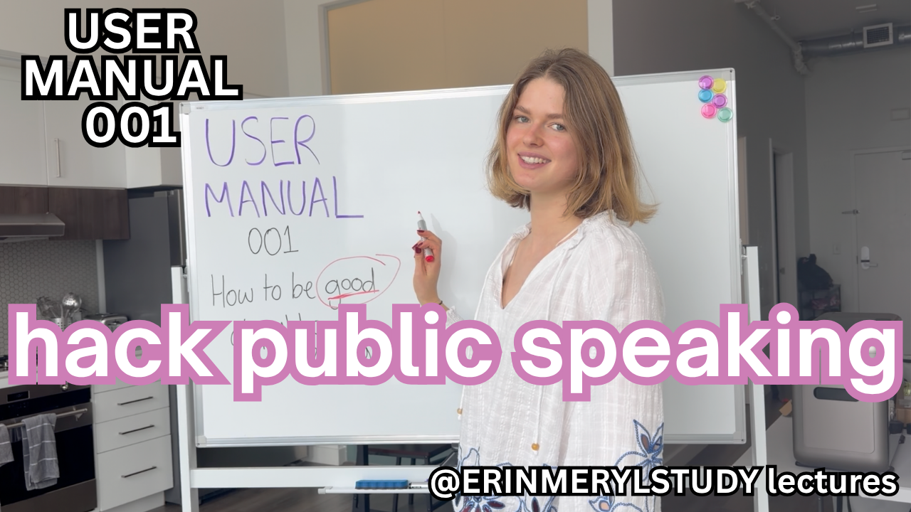
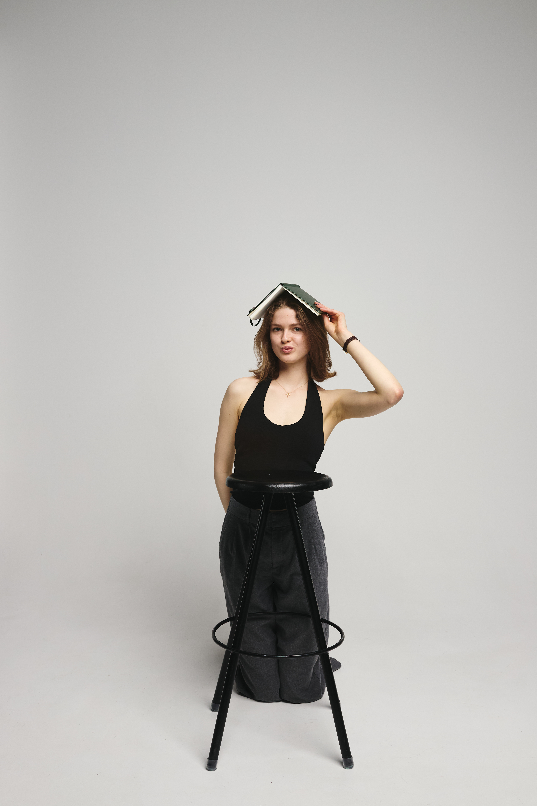

A little
about me.
Erin Meryl McGurk is co-founder of Y Combinator-backed Egoist Machines and has built an audience of 1.4 million followers across social media (@erinmerylstudy).
She is Director of Counter-Intuition at the John Locke Institute and studied Land Economy at St John's College at the University of Cambridge.
Her writing and socials explore education, ambition, and curiosity in their broadest forms.


